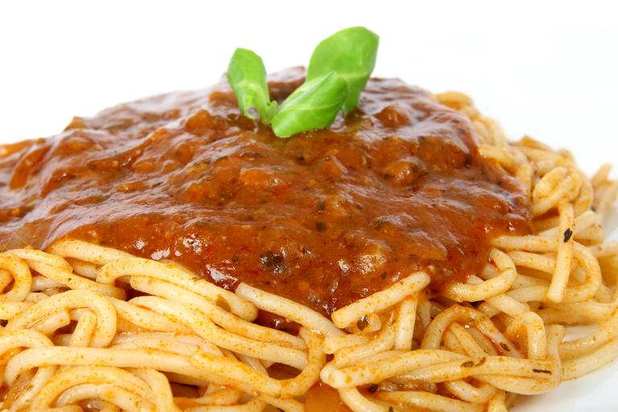

Jarred Pasta Sauce Extender
Description
This is a recipe to extend a jarred pasta sauce and add some meat to it. It serves 1-4 people as a last resort when you for some reason can only serve jarred sauce, you lazy heathen.
Ingredients
- 785g Jarred Pasta Sauce
- 500g Ground Meat
- (Optional) Zucchini, carrot, cucumber, tomatoes, chili, basil, or any fruit, vegetables, and herbs you want to add
- Splash of oil
Steps
- Add the splash of oil to a pan on medium heat and, when it is hot, add the ground meat.
- Grate or cut or blend any vegetables, fruits, and herbs into the meat.
- When the meat is cooked (i.e. no longer pink) add the jarred pasta sauce.
- You can turn off the heat at this stage and let the residual heat cook the jarred pasta sauce. That stuff is made to be eaten raw from the jar by college students. It'll be fine.
- Serve on pasta. Put some cheese on top if feeling adventurous.